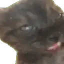
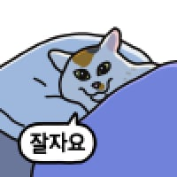
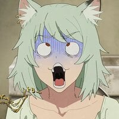
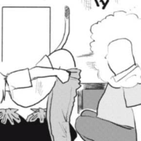
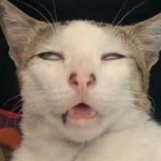

잘자 가스 한방이면 얌전해 질수있다
잘자 가스 한방이면 얌전해 질수있다

미친놈들 ㅋㅋㅋㅋㅋㅋㅋ


뒤로 넘어지면 고양이가 빨강이 되는거 아녀?
맛이 어때 ㅋㅋㅋ 인간의 가스는 쉽지 않지?
넘어지면 ㄷㄷㄷ
좆냥이 몸무게 생각하면 걍 찢어질거같은데
뿌웅~~
누가 에리카좀 틀어봐라
잘자가스각이다
고양이 이동진 어디감
얘가 노랑이야? 지금은 빨강인데?

독일에서 만들었음?
가스한번 살포하면 안에서 발광하려나
지하철에 자리가 나서 호다닥 앉았는데!
ㅋㅋㅋㅋㅋ 고양이 다뒤졌다
발톱 맛이 어때?
곤충이냐ㅋㅋㅋㅋㅋㅋ
황화가스가 동물들한테 치명적이지 않나?
그건 햄스터였나?
바지 질질 내려가겄다
엘든링에 저런 컨셉 몹 있던거 같은데
Ai?


